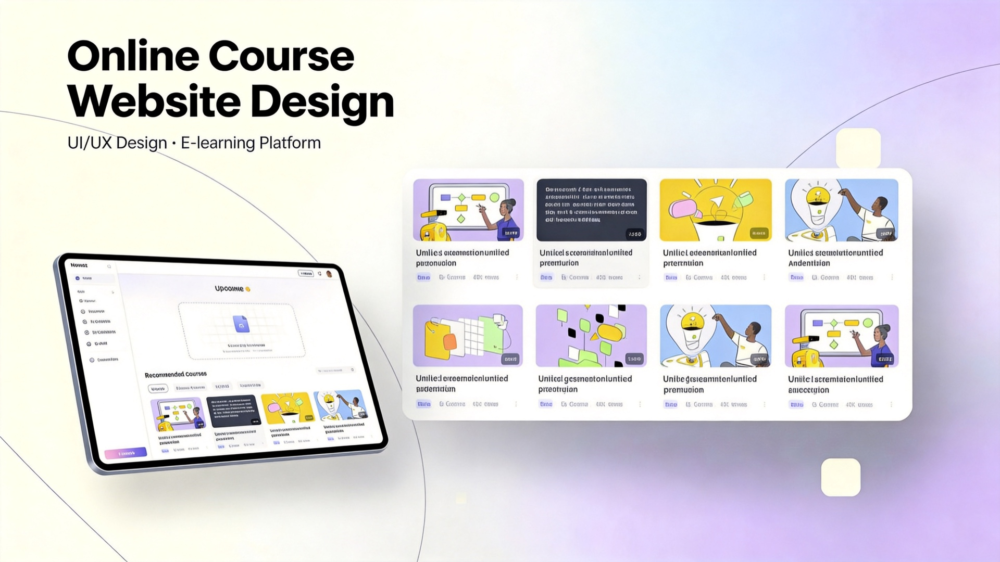
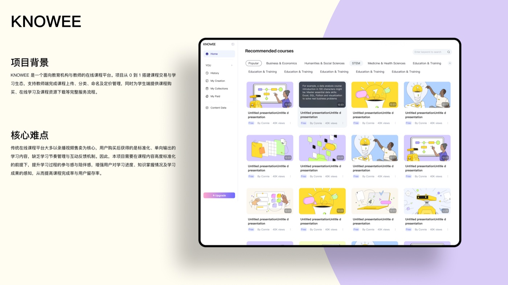
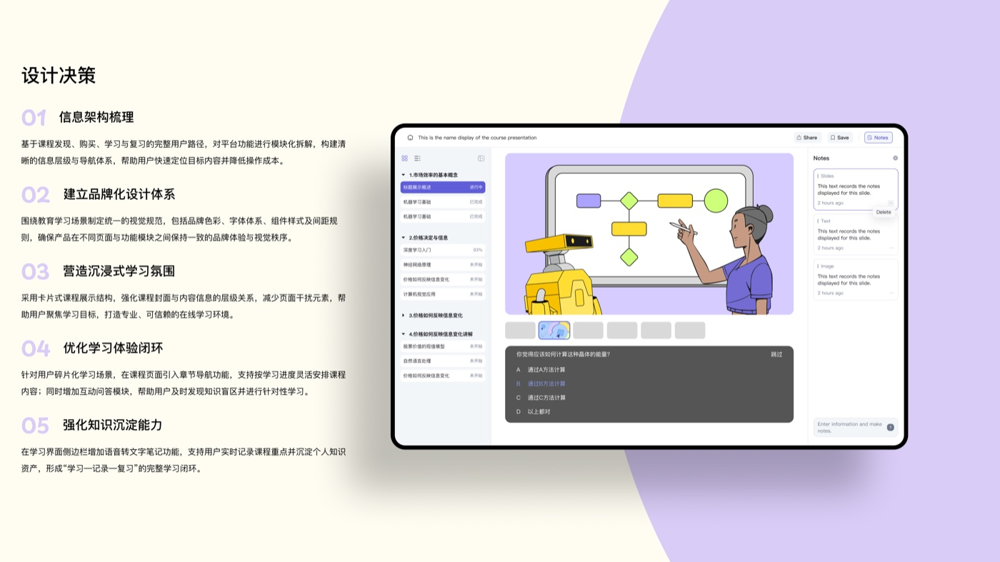
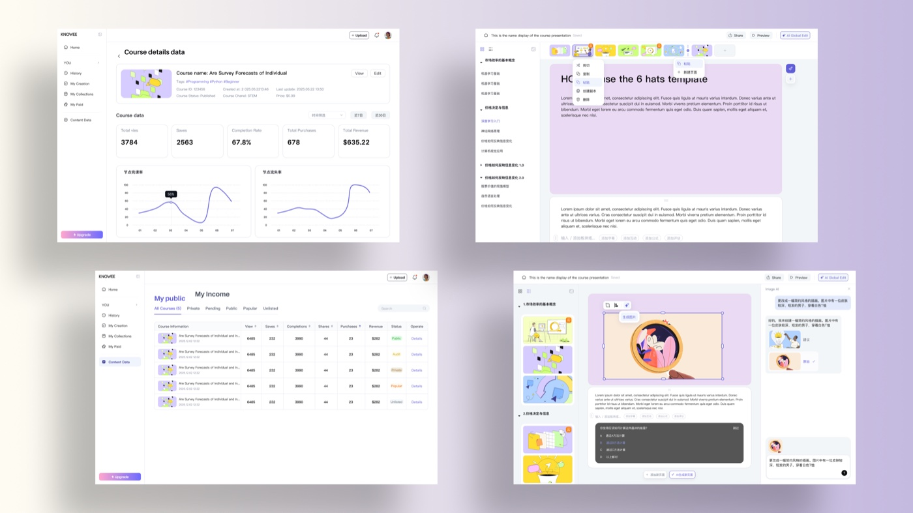

面向教育机构与独立讲师的在线课程平台——B 端创作发布与数据分析，C 端发现、购买、学习、复习的完整体验设计。


B 端要高效创作与运营，C 端要沉浸学习——两端体验必须在同一套设计语言下各自最优。
B 端创作 / 发布 / 数据，C 端发现 / 购买 / 学习 / 复习——链路长、角色多，导航必须清晰可扩展。
建立面向教育场景的色彩、字体、组件与间距规范，保证 50+ 页面视觉一致，降低协作与开发成本。
用卡片式布局强化课程封面与内容的层级，减少视觉噪音，让用户专注在当前章节。
章节导航支持碎片化学习；互动测验 + 语音笔记，形成「学 → 练 → 记 → 复」的完整循环。
两类核心用户决定了 B 端与 C 端的设计优先级。
B 端与 C 端共享同一套设计规范，但信息架构各自围绕核心任务展开。
课件上传、AI 辅助编辑、章节大纲与预览。
分类、标签、权限、定价与发布审核。
浏览、销售、完课率、收入等核心指标看板。
推荐课程、分类筛选、详情页与支付。
章节导航、视频 / 幻灯、随堂测验。
语音转文字笔记、历史记录与进度追踪。



讲师侧：数据看板、课件编辑与 AI 辅助，覆盖「做课 → 卖课 → 看数据」。

Light / Dark 双模式，章节大纲 + 主内容 + 笔记侧栏 + 随堂测验。

做对了什么：先梳理 B/C 双端信息架构，再建立统一设计规范，避免「各做各的」； 学习模式的三栏布局 + 笔记 + 测验，把「看完视频」升级为「真正学会」。
如果重来：会更早引入 Design Tokens 与组件变量，让 Dark 模式、多语言等扩展更低成本； 也会补充可用性测试，验证章节导航与笔记功能的学习效率提升。
收获：这是一次完整的 B+C 端 0→1 实战——从理解教育场景的业务目标， 到落地为可交付的界面、规范与组件库，让我对「设计如何同时服务创作者与学习者」有了更具体的理解。